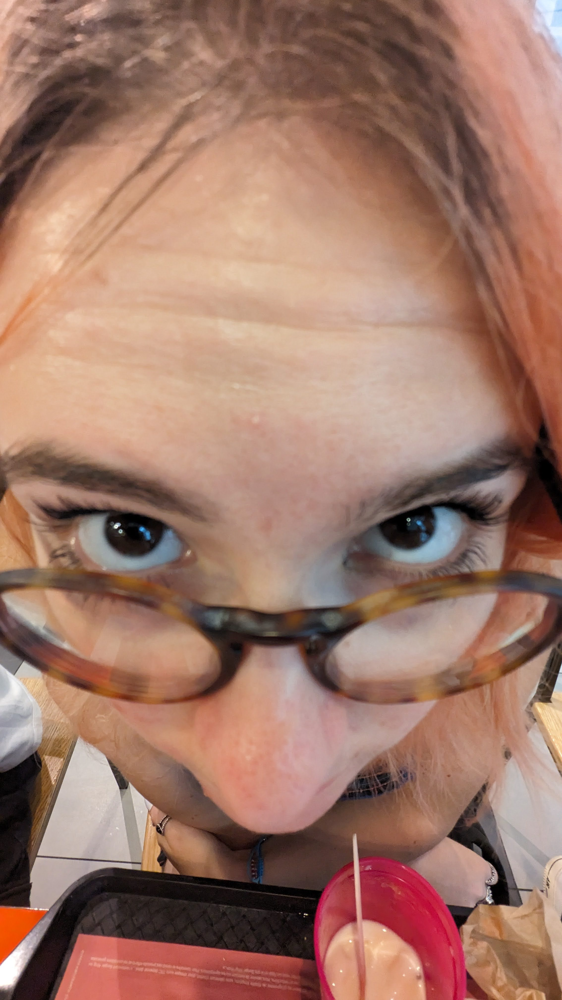

Léora

Léora est une jeune fille de 19 ans, étudiante en 2e année à l'IIM. Elle est fan de Taylor Swift, d'équitation, de jeux vidéo et de Léo.
Depuis quelques années, Léora s'est lancé dans l'industrie musicale. Aujourd'hui, elle est auteure compositeure et interprète. Les rumeurs se disent que Léora préparerait un featuring avec le grand rappeur Yani du 92. Elle espere un jour pouvoir faire un featuring avec sa chanteuse préférée, Taylor Swift.